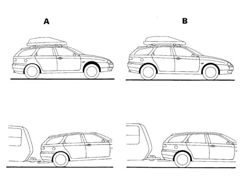
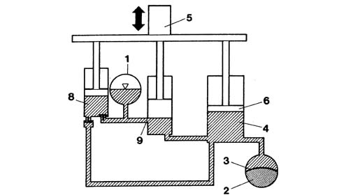
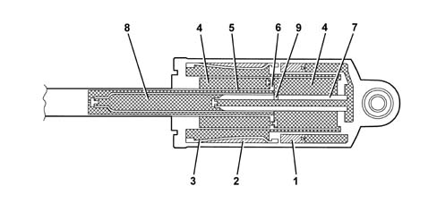
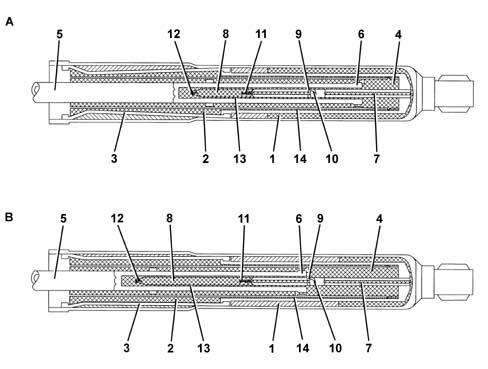
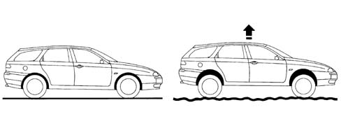
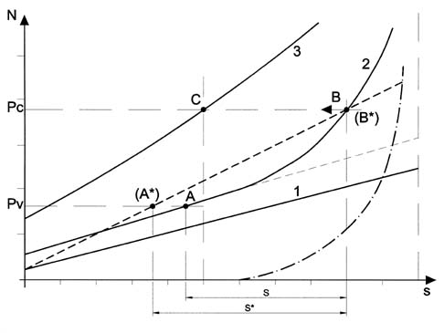
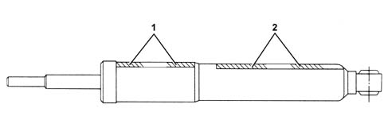

Introduction - SELF-LEVELLING SUSPENSION
- Path
- Descriptions > 44 SUSPENSION AND WHEELS > 4430 SELF-LEVELLING SUSPENSION > Introduction - SELF-LEVELLING SUSPENSION
- Kind
- system description
- Applies to
- all engines; all production periods
- Interactive page
- https://sloeber94.github.io/elrnDB-a156/en/#/3239219
Applies to: all engines; all production periods; only with equipment: Station Wagon
Specifications:
The springs and shock absorbers play a very important role in the vehicle's driving safety and comfort, ensuring tyre grip on the road surface at all times and at the same time absorbing impact on rough ground.
When a heavy load is transported or a trailer or caravan is towed, both these circumstances may cause the vehicle to suffer from the load on the rear axle.
A solution to this problem is the adoption of a self-levelling suspension system, which keeps a constant distance between the rear axle and the bodywork, irrespective of the load applied to the rear axle.
As may be observed in Fig. A, the position of the rear suspension is lowered, reducing the useful travel of the suspension and consequently confort when negotiating road surface roughness. In addition the frequency of the springs, the effective damping of the shock absorbers and the suspension geometry vary significantly, deviating from optimum conditions.

A, Vehicles with conventional suspension B, Vehicles with self-levelling suspension
For the Alfa 156 Sport Wagon, the BOGE Nivomat self-levelling suspension system has been adopted: it consists of two compact and independent units which are fitted instead of the conventional shock absorbers.
These units maintain the correct distance between the rear axle and the bodywork and their damping force is dependent on the load.
Nivomat suspension thus eliminates the well-known problem of conventional suspension which tends to be too hard when the vehicle is empty, and too "spongy" when travelling fully laden.
The Alfa 156 Sport Wagon fitted with Nivomat units travels comfortably even with a light load, but remains dynamically stable and safe when fully laden.
The BOGE Nivomat self-levelling suspension operates without requiring an external energy source.
The Nivomat suspension is a unit which has its own internal pumping action. The energy required for this purpose is obtained entirely from the vertical movements of the vehicle's bodywork.
As soon as the vehicle, by moving, makes the suspension work, the Nivomat units' internal pump starts to operate. It draws hydraulic fluid from an internal reservoir and sends it to a high-pressure chamber in which a compressed gas acts. In this way, the Nivomat units bring the vehicle's bodywork to the predetermined height for optimum driving when the vehicle starts to move, compensating the downward movement of the bodywork caused by a heavy load or a trailer.
There is no separate device for controlling the height which requires adjustment: the height sensors are built into the shock absorber struts.
The initial procedure for adjusting the bodywork height is completed after the vehicle has travelled a distance of around 2000 metres, depending on the road surface.
When the load is removed or passengers leave the vehicle, the optimum height is restored while the vehicle is at a standstill.
The Nivomat units carry out the simultaneous functions of a load-dependent hydropneumatic spring and a hydropneumatic shock absorber and replace conventional shock absorbers, offering the advantages of hydropneumatic self-levelling suspension for every type and class of vehicle, with load-dependent damping.
This system may be installed in the factory on new vehicles or relatively easily on vehicles already in circulation, without too much adaptation and at low cost.
COMPOSITION
The BOGE Nivomat self-levelling units used on the Alfa 156 Sport Wagon consist of an outer shell containing two chambers:
- the low-pressure chamber (1), located at the bottom, acts as the fluid reservoir and is partially filled with gas under pressure;
- the high-pressure chamber (2), located at the top of the unit, is divided in two by a membrane (2); the external part contains the pressurized gas, while the inner part is filled with fluid.
Unladen, the pressure inside the two chambers is identical, about 25 bar; fully laden, the low-pressure chamber is at about 8 bar, while the high-pressure chamber reaches about 80 bar.
The outer casing contains the actual cylinder of the shock absorber (4), to the stem (5) of which is connected the piston (6) with the damping valves.
A perforated pumping stem (7), connected to the base of the unit, runs along the inside of the hollow piston, forming the fluid pump (8).
On the outer surface of the stem (7) there is a hole (9), which acts as a height sensor.
Hydraulic diagram of the Nivomat unit.

Cross-section of the Nivomat unit.

OPERATION
After loading the vehicle (passengers, luggage), the Nivomat units will yield (condition A) to an extent in relation to the stiffness of the springs.
Following the vertical movements of the wheels, caused by the more or less severe irregularities in the road surface, the fluid present in the low-pressure chamber (1) is drawn by the fluid pump (8) via the perforated stem (7) and the inlet valve (11).
From the pump, the fluid is sent, via the outlet valve (12) and the duct (13) to the bottom chamber of the shock absorber (4); from here, through the channel (14), the fluid reaches the high-pressure chamber (2) and compresses the gas contained by the membrane (3).
The greater pressure created also acts in the bottom chamber of the shock absorber (4), causing the stem (5) to extend and the vehicle to be raised.
When the groove (10) begins to emerge from the piston (6), this means that the optimum driving height has been reached (condition B) and the pressurized fluid can flow through the hole (9) and perforated stem (7) into the low-pressure chamber (1).

A, Non-levelled condition B, Levelled condition
The levelled condition is reached after travelling a distance of about 2000 m, depending on the road surface.

Generally a loaded vehicle maintains its levelled height from one day to the next, counteracting the interruptions that occur during a journey (stops for refuelling, meals, overnight, etc.).
When the vehicle is unloaded, the bodywork is raised as with a conventional spring system, and is then lowered immediately, as the fluid is transferred from the high-pressure chamber to the low-pressure chamber, up to the nominal level at which it remains.
Characteristic curve of the Nivomat suspension
The graph below compares the characteristic curves of a conventional shock absorber and a BOGE Nivomat self-levelling unit. The horizontal axis shows the downward movement(s) of the bodywork, while the vertical axis shows the loads (N) applied to the vehicle.
The conventional shock absorber has a spring with constant stiffness, so the downward movement of the bodywork is directly proportional to the applied load (N) and its characteristic curve is linear (dashed line).
With the unladen weight defined Pv and fully laden weight defined Pc, the respective operating points A* and B* are obtained on the characteristic linear curve and the relative downward movement S*.

The Nivomat unit has springs which are less stiff, plus the elastic effect which varies depending on the applied load and the effect of the end-of-travel flexible buffer (dashed and dotted line). The three characteristic curves may thus be defined:
- characteristic curve (linear) of the mechanical spring by itself, less steep than the curve relating to the conventional shock absorber, being less stiff;
- characteristic curve of the Nivomat unit without load, which combines the elastic effects of the mechanical spring, the compressed gas (about 25 bar) and the end-of-travel buffer;
- characteristic curve of the Nivomat unit fully laden, which differs from the above because a larger proportion is taken up by the compressed gas (pressure increased to about 80 bar).
Note that in the Nivomat unit, the stiffness increases as the applied load increases.
The curve (2) gives the operating points A and B in the unladen and fully laden conditions, and the downward movement "S" with the vehicle at a standstill.
When the vehicle sets off, in the Nivomat units the fluid is transferred from the low-pressure chamber to the high-pressure chamber, because of roughness on the road surface.
When the gas pressure increases, the operating point is gradually shifted towards the left on curves with increasing stiffness, causing the vehicle to be raised.
After travelling a distance of about 2000 metres, the operating point C is reached, which corresponds to a predetermined levelling condition.
Applies to: all engines; all production periods
Applies to: all engines; all production periods; only with equipment: Station Wagon
Scrapping self-levelling units
Before sending Nivomat self-levelling units to be scrapped, it is necessary and a duty to de-pressurize them.
To depressurize Nivomat self-levelling units, two small holes must be drilled in the areas shown in the figure, corresponding to the high-pressure (1) and low-pressure (2) chambers. The holes must have a diameter of 1 mm and depth of at least 8 mm.
